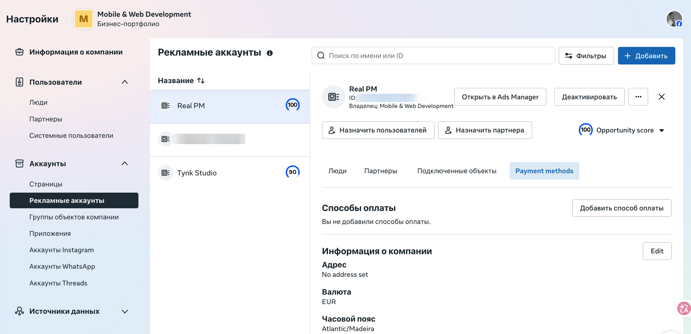
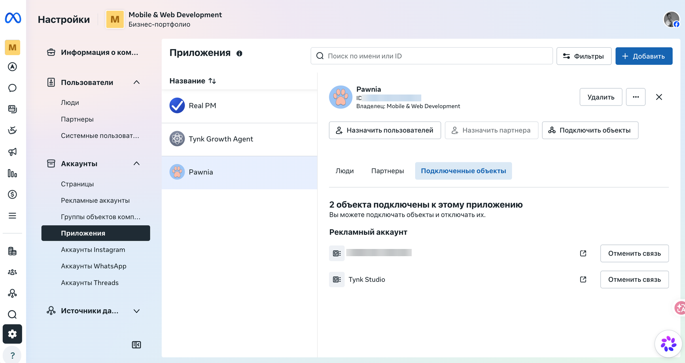

3.1 Business Manager
Business Settings (business.facebook.com/settings) — это структура: какие рекламные аккаунты и приложения принадлежат твоей компании и как они связаны друг с другом. Это отдельный интерфейс от Meta for Developers (следующий шаг) и от Ads Manager (где реально крутится реклама).
Рекламные аккаунты
Настройки → Аккаунты → Рекламные аккаунты. Список всех аккаунтов компании с их Opportunity score. Каждый продукт обычно получает свой рекламный аккаунт.

Рекламные аккаунты
Список всех ad-аккаунтов, которыми владеет или управляет Business Manager.
Название аккаунта
Выбранный в списке аккаунт открывает детали справа — владельца, способы оплаты, подключённые объекты.
«Открыть в Ads Manager»
Прямой переход в рекламный кабинет этого аккаунта — там создаются сами кампании (шаг 3.5).
Скрыт: ID рекламного аккаунта
Числовой идентификатор конкретного ad-аккаунта. У себя смотри: Business Settings → Рекламные аккаунты → выбранный аккаунт → поле «ID».
Скрыт: ID рекламного аккаунта
Тот же тип идентификатора, в списке слева.
Приложения — привязка к рекламному аккаунту
Настройки → Аккаунты → Приложения. Здесь видно, какие рекламные аккаунты подключены к конкретному приложению — именно эта связь нужна, чтобы кампании могли оптимизироваться под события этого приложения.

Приложения
Список приложений Meta for Developers, принадлежащих этой компании: Real PM, Tynk Growth Agent, Pawnia.
Выбранное приложение
Клик открывает детали справа, включая подключённые объекты.
Подключённые объекты → Рекламный аккаунт
Именно здесь прописана связь «это приложение → этот рекламный аккаунт». Если кампания не видит события приложения — первое, что стоит проверить, это именно здесь.
Скрыт: ID рекламного аккаунта
Тот же аккаунт, что и на предыдущем скрине — у себя смотри в деталях приложения, вкладка «Подключённые объекты».